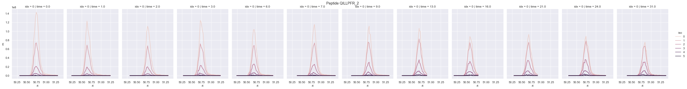

Documentations
Basics
RIANA has two components, integrate and fit (experimental), which can be individually called using riana integrate and riana fit. For the help message of each component, type riana integrate -h and riana fit -h.
Integrate
The integrate component reads in mass spectrometry data files (.mzML) and the corresponding Percolator search result. The Percolator results cna be supplied directly to RIANA or generated automatically from the mass spectrometry data files using the included Snakemake ppeline).
RIANA reads and filters the search result files based on the -q argument for Percolator adjusted P values and the -u flag for protein-unique peptides. For each qualifying peptide-charge concatamer, RIANA then calculates the accurate mass and m/z of the unlabeled (m0) isotopomer, as well as each of the successive isotopomers specified in the -i argument.
RIANA then reads the corresponding mass spectrometry file and locate the scans from which the peptide was identified, plus a retention time (rt) window -r and retrieve the intensity over rt of each isotopomer. The areas-under-curve of each extracted ion chromatogram is then integrated usign the trapezoid method and written into the output file.
The intensity over rt data prior to integration can also be saved directly using the -w flag. This will create a large file (up to 10s of Gbs) for each experimental time point.

Fit
The fit component takes in the integration results from multiple mass spectrometry experiments, and fits the relative isotope abundance data across labeling time points to a specified kinetic model.
Three models ar ecurrently supported. In the simple model, the fraction of new protein over labeling time behavior of a peptide is described by an exponential decay equation with one parameter (\(k\)):
\[ A_t = A_{t=0} + (A_{t\rightarrow \infty} - A_{t=0}) \cdot 1 - e^{-k t} \]
where \(A_{t=0}\) is the initial relative abundance of the m0 peak over the mi peaks, and is set to 1 in amino acid labeling experiments. \(A_{t\rightarrow \infty}\) is calculated based on the plateau relative isotope abundance, which is based on the number of labeling sites in a peptide and the precursor plateau enrichment. The latter is supplied through the -r argument in riana fit.
The two-compartment model is implemented as in Guan et al. 2012. The fraction of new protein over labeling time behavior of a peptide is described by a two-exponent model with the protein turnover rate constant (\(k\)) as well as the precursor availability rate constant (\(k_p\)):
\[ A_t = A_{t=0} + (A_{t\rightarrow \infty} - A_{t=0}) \cdot \frac{1 - ( e^{-kt}k_p - e^{-k_pt}k)}{k_p - k } \]
The Fornasiero model two-compartment, three-exponent model additionally attempts to account for the effect of precursor reutilization from proteome-wide protein degradation. The two additional parameters --kr and --rp must be provided to denote the reutilization rate constant and the proportion of protein-bound vs. free precursors. Details are described in the original publication.
Currently RIANA only calculates fractional synthesis of new peptides based on the decrease of the unlabeled (m0) over all specified isotopomers (m0 - mi). Future updates will allows specification of numerators and denominators in calculating fractional synthesis for more flexible experimental designs.
All Options
RIANA integrate
riana integrate -h
usage: riana integrate [-h] [-s SAMPLE] [-i ISO] [-u] [-t THREAD] [-o OUT] [-q Q_VALUE]
[-r R_TIME] [-m MASS_TOL] mzml_path id_path
positional arguments:
mzml_path <required> path to folder containing the mzml files
id_path <required> path to the percolator output psms.txt file
optional arguments:
-h, --help show this help message and exit
-s SAMPLE, --sample SAMPLE
sample name to override mzml folder name, must include numbers, e.g., time1
-i ISO, --iso ISO isotopes to do, separated by commas, e.g., 0,1,2,3,4,5 [default: 0,6]
-u, --unique integrate unique peptides only
-t THREAD, --thread THREAD
number of threads for concurrency [default: 1]
-o OUT, --out OUT path to the output directory [default: riana]
-q Q_VALUE, --q_value Q_VALUE
integrate only peptides with q value below this threshold [default: 1e-2]
-r R_TIME, --r_time R_TIME
retention time (in minutes, both directions) tolerance for integration
-w, --write_intensities
also write pre-integration intensities into a result file
-m MASS_TOL, --mass_tol MASS_TOL
<integer> mass tolerance in ppm for integration [default 50 ppm]
-D {D,C13,SILAC}, --mass_defect {D,C13,SILAC}
mass defect type [default: D]
RIANA fit
riana fit -h
usage: __main__.py fit [-h] [-m {simple,guan,fornasiero}] [-l {aa,hw,o18}] [-a AA] [--kp KP]
[--kr KR] [--rp RP] [-q Q_VALUE] [-d DEPTH] [-r RIA] [-o OUT] [-p] [-t THREAD] riana_path [riana_path ...]
positional arguments:
riana_path <required> paths to one or more integrate out text files
(note: the sample field must include numericals corresponding
to time units (e.g., time0, time 6)
optional arguments:
-h, --help show this help message and exit
-m {simple,guan,fornasiero}, --model {simple,guan,fornasiero}
kinetic models for fitting, currently only the simple exponential model
is implemented [default: simple]
-l {aa,hw,o18}, --label {aa,hw,o18}
labeling type [default: hw]
-a AA, --aa AA which amino acid residue is label carrying [default: K]
--kp KP for two-compartment models, the precursor rate constant [default: 0.5]
--kr KR for the fornasiero model, the reutilization rate constant [default: 0.05]
--rp RP for the fornasiero model, the ratio of protein bound to free precursors
[default: 10]
-q Q_VALUE, --q_value Q_VALUE
fits only peptide data points with q value below this threshold [default: 1e-2]
-d DEPTH, --depth DEPTH
fits only peptides identified in at least this many samples [default: 6]
-r RIA, --ria RIA final isotope enrichment levels, if known [default: 0.5]
-o OUT, --out OUT path to the output directory [default: riana]
-p, --plotcurves plot fitted curves
-t THREAD, --thread THREAD
number of threads for concurrency [default: 1]